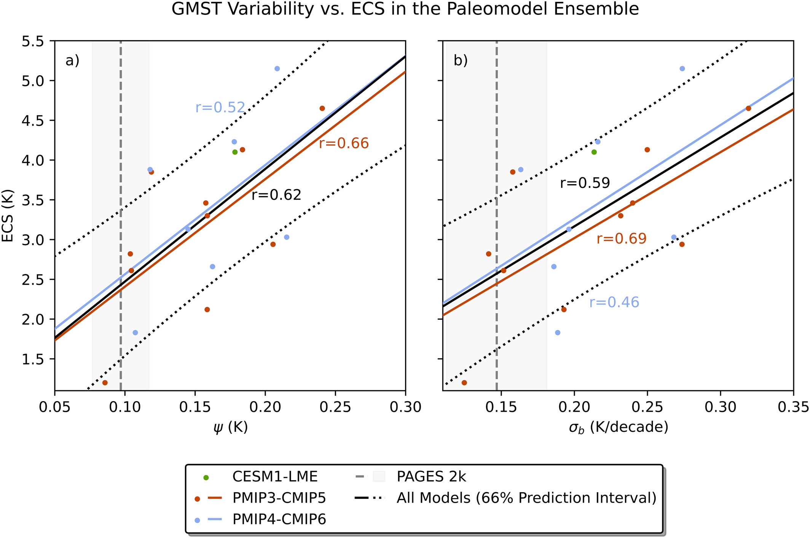
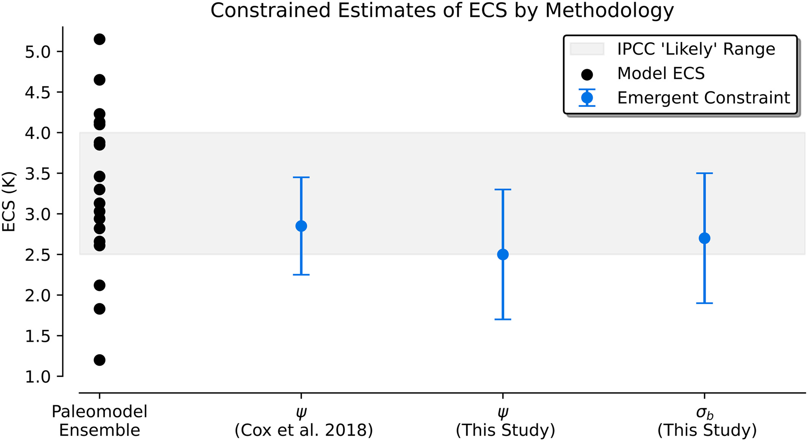

Results#
Emergent Relationship Between Temperature Variability and ECS#
And now, for the big reveal! Our Figure 3 shows that for both our interannual (ψ) and decadal (σb) variability metrics, there is a positive and statistically significant relationship with ECS that ranges from r ≈ 0.59 to 0.62. Interestingly, we see that the relationship holds in both PMIP3-CMIP5 and PMIP4-CMIP6 ensembles, although consistent with prior findings, it is noticeably weaker for the PMIP4-CMIP6 model generation, which is the most recent. The fact that this emergent relationship remains robust over such a long time period which is dominated by a variety of external forcings and extends to a time before pre-industrial CO2 emissions suggests that the emergent relationship may be more robust than some believe, which could make it particularly useful for our purposes of constraining ECS!

Constraining ECS#
Using the emergent constraint approach outlined by Bowman et al. (2018), we calculated the new estimated ranges for ECS in Figure 4. The emergent constraint method shows two ECS estimates (depending on two different metrics of temperature variability) centered around 2.5 K (interannual metric) and 2.7 K (decadal metric), with an uncertainty of about ±0.8 K in both cases (uncertainty is defined as the “likely” range, which is the 66% confidence interval). Such measurements are generally consistent with the IPCC’s findings of an ECS range between 2.5 and 4.0 K.
